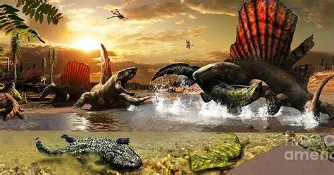

El Pérmico es el sexto y último sistema y período del Paleozoico en la escala temporal geológica. Sucede al Carbonífero y precede al Triásico (primer periodo del Mesozoico). Duró unos 47 millones de años, comenzando hace unos 299 millones de años y acabando hace unos 252 millones de años. Debe su nombre a la ciudad rusa de Perm, lugar donde el geólogo escocés Roderick Murchison identificó este sistema en 1841.
El periodo Pérmico presenció la diversificación de los primeros amniotas en los grupos ancestrales de mamíferos, tortugas, lepidosaurios y arcosaurios. El mundo en aquel tiempo estaba dominado por dos continentes, conocidos como Pangea y Siberia, rodeados por un océano global llamado Panthalassa.
El Pérmico, y con él la era Paleozoico, terminó con la extinción masiva del Pérmico-Triásico, la mayor extinción en la historia de la Tierra, en la que desaparecieron el 81 % de las especies marinas y el 70 % de las terrestres.
En el Pérmico hubo importantes cambios climáticos con una tendencia general de climas tropicales a condiciones más secas y áridas. Se produjo una contracción de los pantanos. Se extinguieron gran cantidad de helechos arborescentes (Lycopodiophyta) y anfibios, que requerían condiciones húmedas. Los helechos con semilla, los reptiles y los terápsidos dominaron los ambientes terrestres. Los glaciares del Carbonífero sobre la región polar del sur de Gondwana retrocedieron durante el Pérmico.
Las tierras emergidas se unen formando el supercontinente Pangea, creando los Apalaches. Fin de la glaciación permo-carbonífera. Los reptiles sinápsidos (pelicosaurios y terápsidos) se hacen abundantes, siguen siendo comunes los parareptiles y anfibios temnospóndilos. Durante el Pérmico medio, la flora del carbonífero es reemplazada por gimnospermas con estróbilos (las primeras plantas con semilla verdaderas) y los primeros musgos verdaderos. Evolucionan los escarabajos y las moscas. La vida marina florece en los arrecifes someros y cálidos; braquiópodos prodúctidos y espiriféridos, bivalvos, foraminíferos, y ammonoideos, todos muy abundantes. Extinción del permo-triásico hace 251 Ma: se extingue el 95 % de la vida en la Tierra, incluyendo todos los trilobites, graptolites y blastozoos.
En ese período finalizó la orogenia varisca debida a la formación del gran continente llamado Pangea.